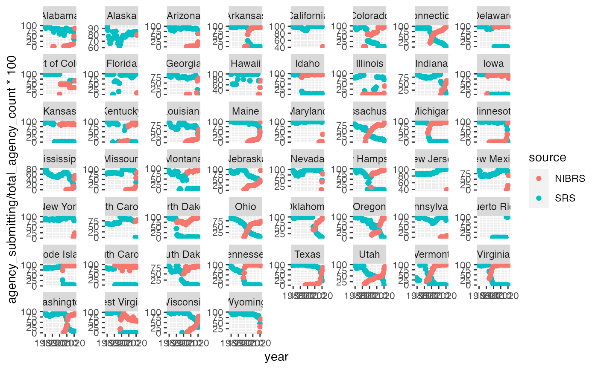
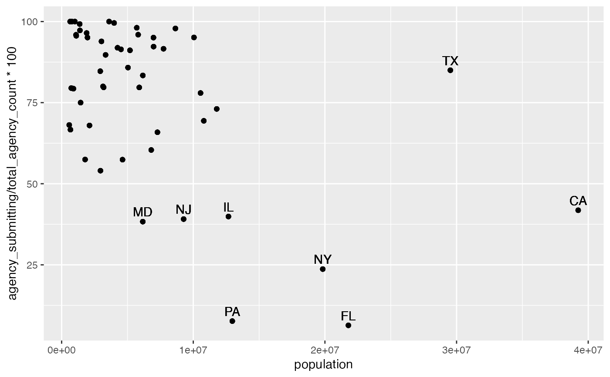
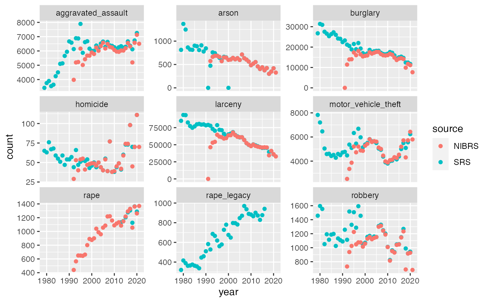
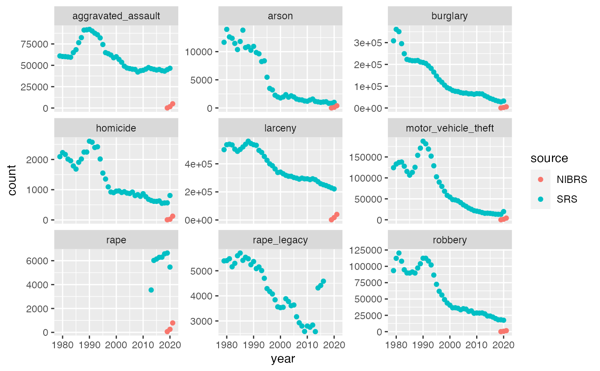

fbi.v2.RdA dataset containing the state-wide counts of offenses for a selected number of crimes since 1979
as reported through the API for the FBI's Crime Data Explorer
at https://cde.ucr.cjis.gov/LATEST/webapp/#/pages/docApi.
Last updated: Sep 20 2023
The variables are as follows (more detail on the FBI website):
fbi.v2A tibble with 26520 rows and 12 columns
name of the state for which numbers are reported.
id for each state.
two letter state abbreviation.
year of the reporting.
state population.
type of crime.
number of reported offenses.
total number of crime-solving agencies in the state.
number of agencies who reported data.
percent of the state's population covered by reporting agencies.
source of the estimate: SRS (standard reporting system) or NIBRS (national incidence based reporting system)
# example code
library(tidyverse)
#> ── Attaching core tidyverse packages ──────────────────────── tidyverse 2.0.0 ──
#> ✔ dplyr 1.1.4 ✔ readr 2.1.4
#> ✔ forcats 1.0.0 ✔ stringr 1.5.0
#> ✔ ggplot2 3.4.4 ✔ tibble 3.2.1
#> ✔ lubridate 1.9.3 ✔ tidyr 1.3.0
#> ✔ purrr 1.0.2
#> ── Conflicts ────────────────────────────────────────── tidyverse_conflicts() ──
#> ✖ dplyr::filter() masks stats::filter()
#> ✖ dplyr::lag() masks stats::lag()
#> ℹ Use the conflicted package (<http://conflicted.r-lib.org/>) to force all conflicts to become errors
# compliance to report to NIBRS varies drastically by state
fbi.v2 %>%
ggplot(aes(x = year, y = agency_submitting/total_agency_count*100)) +
geom_point(aes(colour = source)) +
facet_wrap(~state, scales="free_y")
#> Warning: Removed 9 rows containing missing values (`geom_point()`).

# population size is related to compliance
fbi.v2 %>%
filter(year==2021) %>%
ggplot(aes(x = population, y = agency_submitting/total_agency_count*100)) +
geom_point() +
geom_text(aes(label=state_abbr),
nudge_y = 3,
data = fbi.v2 %>%
filter(year==2021,
agency_submitting/total_agency_count*100 < 50 |
population > 2e+07) %>% unique())

# comparison of SRS and NIBRS counts in Iowa across all types of offenses
fbi.v2 %>% filter(state_abbr=="IA") %>%
ggplot(aes(x = year, y = count)) +
geom_point(aes(colour = source)) +
facet_wrap(~type, scales="free_y")
#> Warning: Removed 38 rows containing missing values (`geom_point()`).

# comparison of SRS and NIBRS counts in New York across all types of offenses
fbi.v2 %>% filter(state_abbr=="NY") %>%
ggplot(aes(x = year, y = count)) +
geom_point(aes(colour = source)) +
facet_wrap(~type, scales="free_y")
#> Warning: Removed 38 rows containing missing values (`geom_point()`).
